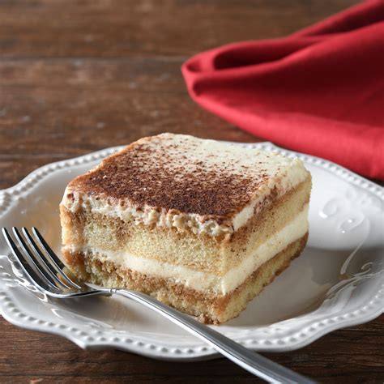

Tiramisu

Description
Tiramisu is my favorite dessert. I love it so much. It makes me think of Ashley Stephens. She is the best girlfriend ever.
Tiramisu is a coffee-flavoured Italian dessert. It is made of ladyfingers dipped in coffee, layered with a mix of mascarpone cheese and egg yolks flavored with cocoa and liquor. However, numerous variations of Tiramisu exist. The original shape of the cake is round, although the shape of the biscuits allows the use of a rectangular or square pan, spreading the classic image “to tile”.
Ingredients
- 6 large egg yolks
- 3/4 cup white sugar
- 2/3 cup milk
- 1 1/4 cups heavy cream
- 1/2 teaspoon vanilla extract
- 1 pound marscarpone
- 1/4 cup coffee
- 2 tablespoons rum
- 2 (3 oz) packages of lady finger cookies
- 1 tablespoon unsweetened cocoa powder
Steps
- Whisk together egg yolks and sugar in a medium saucepan until well blended. Whisk in milk and cook over medium heat, stirring constantly, until mixture comes to a boil.
- Boil gently for 1 minute, then remove from the heat and allow to cool slightly.
- Cover tightly and chill in the refrigerator for 1 hour.
- Beat cream and vanilla in a medium bowl with an electric mixer until stiff peaks form.
- Remove egg yolk mixture from the refrigerator; add mascarpone cheese and whisk until smooth.
- Combine coffee and rum in a small bowl. Split ladyfingers in half lengthwise and drizzle with the coffee mixture.
- Arrange 1/2 of the soaked ladyfingers in the bottom of a 7x11-inch dish. Spread 1/2 of the mascarpone mixture over the ladyfingers, then spread 1/2 of the whipped cream over top. Repeat layers once more. Sprinkle cocoa powder over top.
- Cover and refrigerate until set, 4 to 6 hours.